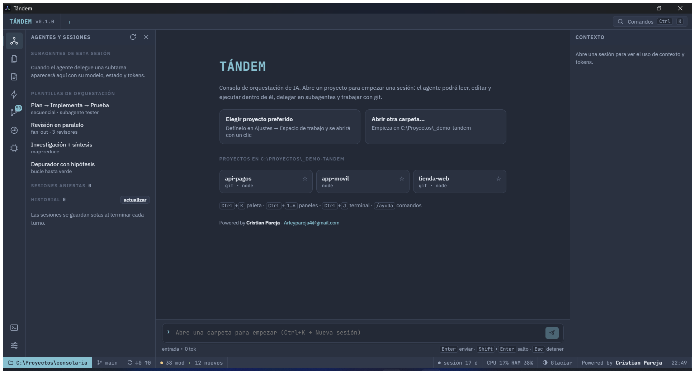
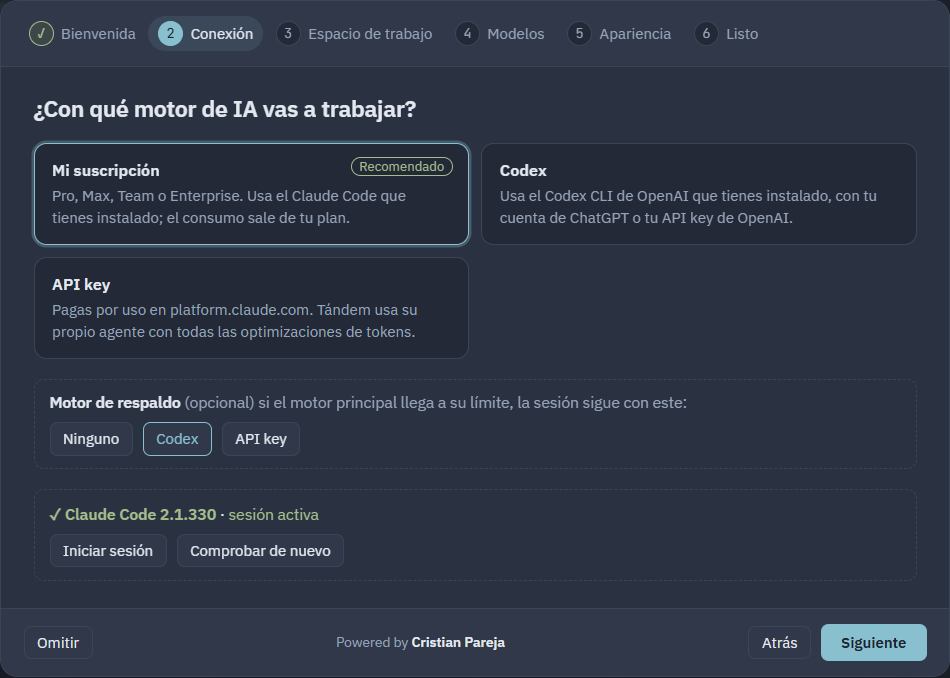
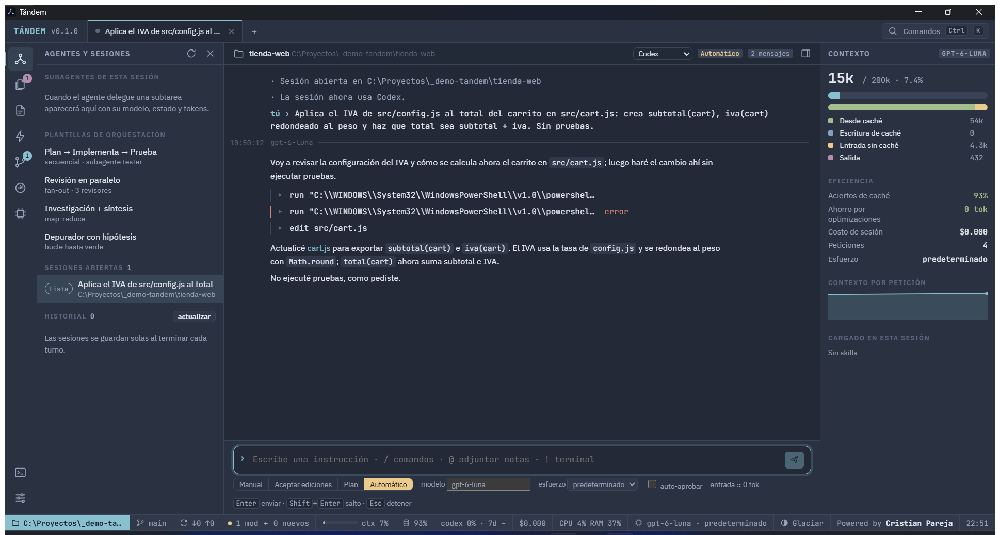
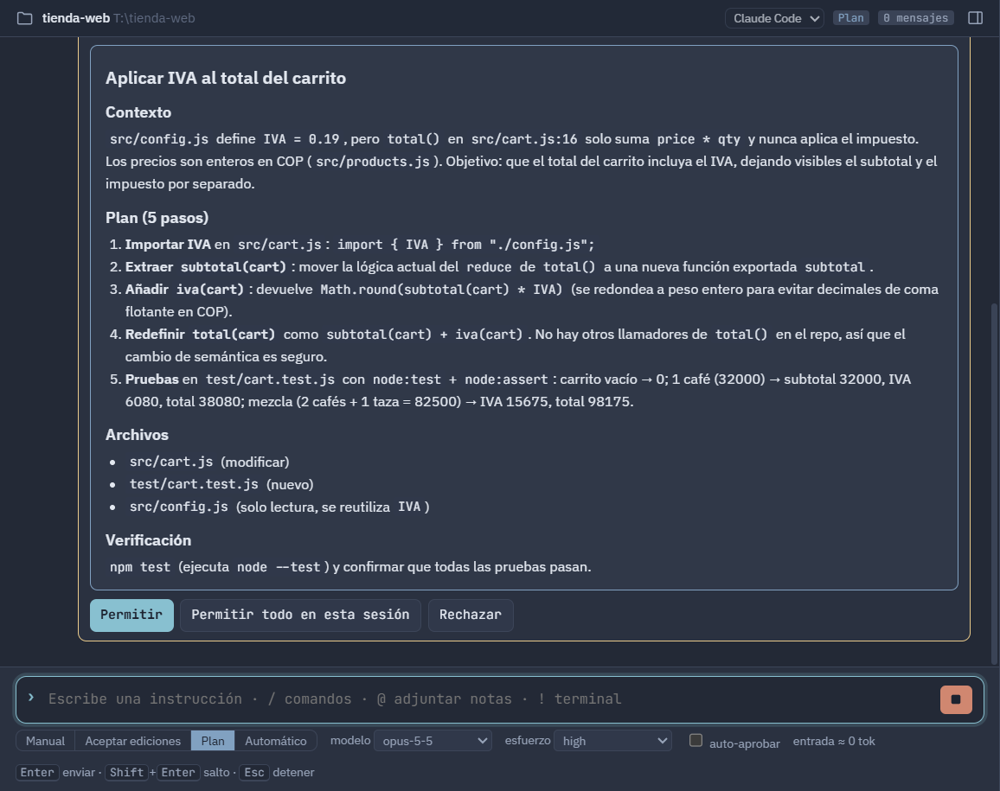
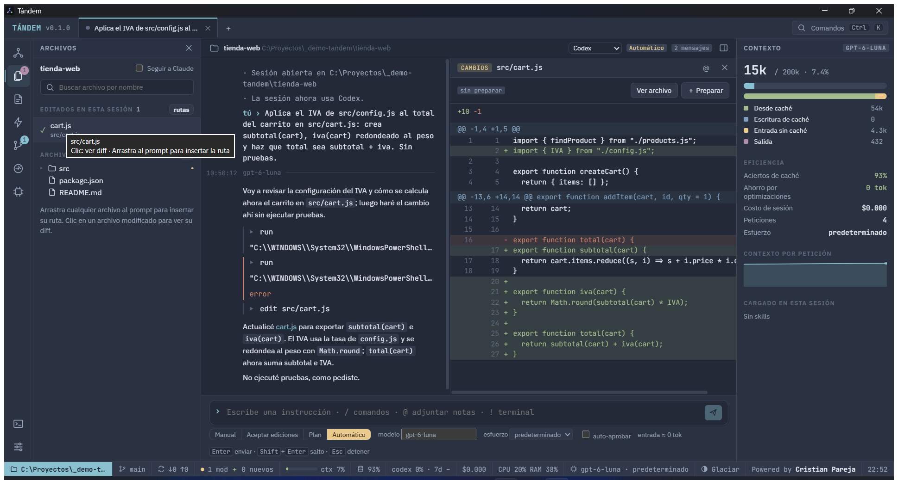
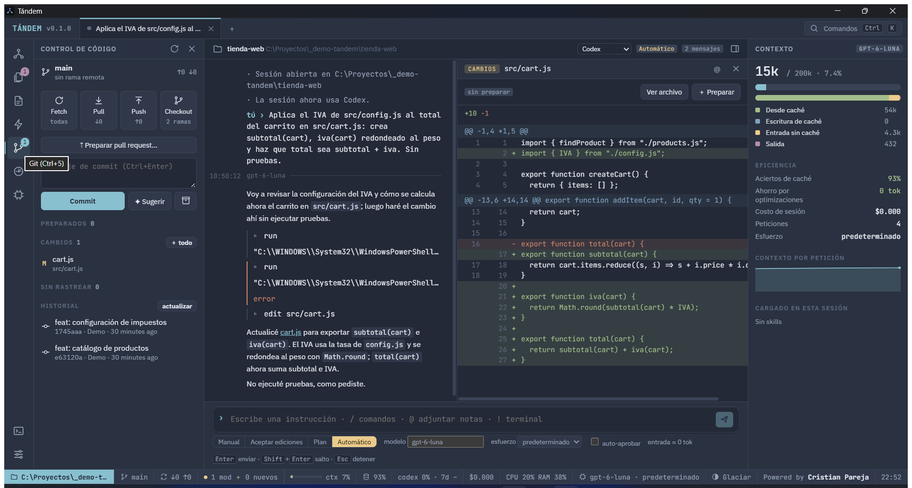
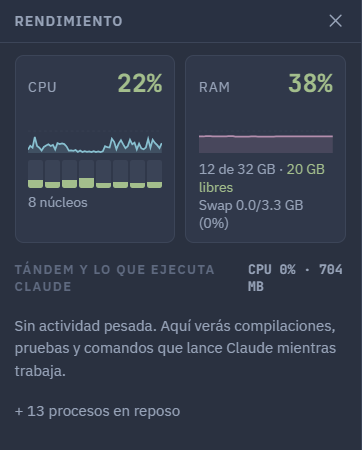
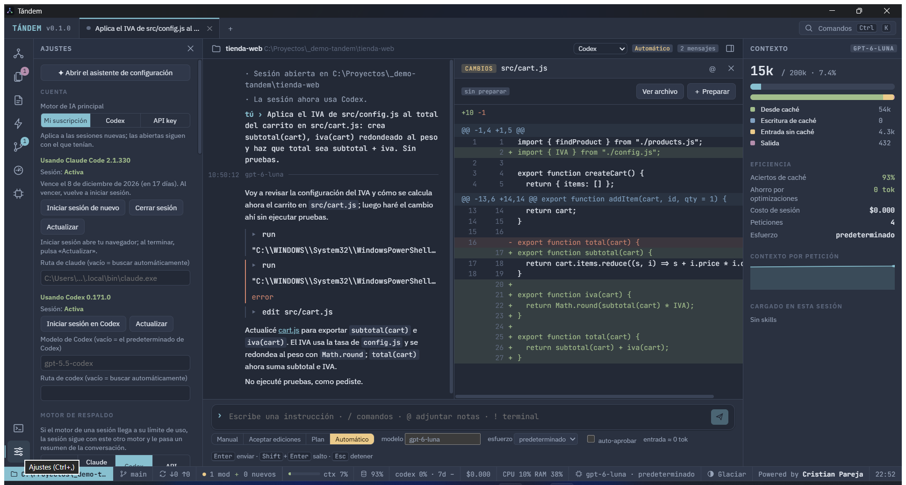

TÁNDEM
Una consola de escritorio para trabajar con IA sobre tus proyectos: conversas con el agente, apruebas lo que hace, revisas los diffs, manejas git y ves en todo momento qué está pasando.
- Windows · macOS · Linux
- Claude Code
- Codex
- Español · English

Instalación
- Descarga el instalador para tu sistema desde Releases:
.msio.exeen Windows,.dmgen macOS,.AppImage,.debo.rpmen Linux. - Instala al menos uno de los motores y abre sesión una vez en una terminal:
- Claude Code (suscripción Pro, Max, Team o Enterprise): instálalo desde
code.claude.comy ejecutaclaude. - Codex (cuenta de ChatGPT o API key de OpenAI):
npm install -g @openai/codexy luegocodex login.
- Claude Code (suscripción Pro, Max, Team o Enterprise): instálalo desde
- Abre Tándem. El asistente detecta qué tienes instalado y si la sesión está activa.
claude o el codex que tú instalaste, con tu propia sesión. No lee ni guarda tus credenciales y el consumo sale de tu plan.Primer inicio: el asistente
La primera vez se abre un asistente de seis pasos: idioma, motor de IA, espacio de trabajo, modelos, apariencia y resumen. Cada opción tiene un ⓘ que explica para qué sirve. Puedes reabrirlo cuando quieras desde Ajustes → Abrir el asistente de configuración.

Proyectos y sesiones
En Ajustes → Espacio de trabajo indicas la carpeta donde guardas tus proyectos y, si quieres, un proyecto preferido. Desde el inicio abres cualquiera con un clic; cada pestaña es una sesión con su propia conversación y su propio motor.
- Ctrl+N o ＋ en la barra de pestañas vuelve al inicio para abrir otra sesión.
- Las sesiones se guardan solas y puedes retomarlas desde Historial.
- La barra inferior muestra la carpeta, la rama, los cambios sin commit, el uso de contexto, el uso de tu plan y la sesión.
Motores: Claude Code y Codex
Usa tu suscripción. Reconoce tus comandos, skills, agentes y servidores MCP.
Usa el Codex CLI de OpenAI con tu cuenta. Tiene los mismos modos, aprobaciones y lista de archivos editados.
Agente propio de Tándem sobre la API de Anthropic, con todas las optimizaciones de tokens. Pagas por uso.
Cada sesión tiene un selector de motor en la cabecera. También puedes escribir /motor claude, /motor codex o /motor api. Al cambiar, el motor nuevo recibe un resumen de la conversación y sigue donde quedó. Si vuelves a un motor que ya usaste, retoma su conversación y solo recibe lo que pasó mientras no estaba.

Respaldo automático
En Ajustes → Motor de respaldo eliges otro motor. Si el de una sesión llega a su límite de uso, Tándem:
- pasa la sesión al motor de respaldo con un resumen de lo hablado,
- reenvía tu último mensaje, el que quedó sin respuesta,
- marca la sesión con la etiqueta respaldo,
- vuelve al motor original en tu siguiente mensaje cuando su límite se reinicie (puedes desactivarlo).
Varias cuentas de Claude: en Ajustes → Cuentas de Claude Code creas un perfil por cuenta (por ejemplo, personal y de empresa). Cada perfil guarda su sesión aparte y cambias entre ellos a mano.
Modos de permisos
Debajo del cuadro de texto eliges cómo trabaja el agente. Pulsa Shift+Tab para pasar al siguiente modo.
| Modo | Qué hace |
|---|---|
| Manual | Pide tu aprobación antes de editar archivos o ejecutar comandos. |
| Aceptar ediciones | Edita archivos del proyecto sin preguntar; pide aprobación para los comandos. |
| Plan | Solo investiga y te propone un plan. No cambia nada hasta que lo apruebes. |
| Automático | Hace lo seguro sin preguntar (leer, buscar, editar dentro del proyecto) y te consulta lo riesgoso. |

Cuando el agente necesita que elijas entre varias opciones, aparece una tarjeta con botones y un campo para escribir otra respuesta.
Comandos con /
Escribe / en el cuadro de texto y verás los comandos de Tándem junto con los comandos, skills y workflows que tu Claude Code reconoce en ese proyecto. Algunos útiles:
/motor | Cambia el motor de la sesión. |
/mcp | Estado de tus servidores MCP (Claude Code). |
/modelo, /esfuerzo | Cambian el modelo o el nivel de razonamiento. |
/compactar, /contexto | Resumen la conversación o cuentan los tokens del contexto. |
/skill, /nota, /adjuntar | Cargan skills y notas. |
/git status, /git pull, /git commit… | Git sin salir del cuadro de texto. |
/ayuda | Todos los comandos y atajos. |
Usa @ para adjuntar notas y ! para ejecutar algo en la terminal integrada.
Archivos y diffs
El panel Archivos muestra el árbol del proyecto y, arriba, los archivos que el agente editó en la sesión. Haz clic en uno para ver su diff junto a la conversación. Con Seguir al agente activado, el diff se abre solo cada vez que termina de editar un archivo.
Arrastra cualquier archivo al cuadro de texto para insertar su ruta.

Git y pull requests
El panel Git (Ctrl+5) reúne fetch, pull, push y checkout de ramas; cambios preparados y sin preparar; commit con mensaje sugerido por la IA; stash e historial. Haz clic en un commit para ver sus archivos y diffs.
- Conflictos: durante un merge eliges por archivo «mío», «suyo» o editas a mano, y luego continúas o abortas.
- Preparar pull request: la IA redacta título y descripción a partir de tus commits; tú revisas y lo creas con
gh.

Subagentes
Cuando el agente delega una tarea, aparece una tarjeta con el rol, el modelo y el estado. Con Ver detalle abres la tarea, cada herramienta que usó y lo que devolvió al agente principal. El panel Agentes y sesiones lista además los agentes que tu Claude Code tiene disponibles.
Notas y skills
Escribe y guarda notas .md en el panel Notas para reutilizarlas: adjúntalas a un mensaje con @ o fíjalas para que acompañen a todas las sesiones del proyecto. En Skills cargas o quitas skills en cualquier momento.
Tokens y rendimiento
El inspector de la derecha muestra el contexto usado, los aciertos de caché y el uso de tu plan (ventana de 5 horas y semanal). El panel Rendimiento muestra CPU, RAM y lo que Tándem y el agente están ejecutando, útil cuando compila o corre pruebas.

Atajos de teclado
| Ctrl+K | Paleta de comandos |
| Ctrl+1…7 | Paneles: agentes, archivos, notas, skills, git, tokens, rendimiento |
| Ctrl+, | Ajustes |
| Ctrl+J | Terminal integrada |
| Ctrl+B / Ctrl+I | Mostrar u ocultar el panel lateral / el inspector |
| Ctrl+N | Nueva sesión (inicio) |
| Ctrl+L | Ir al cuadro de texto |
| Shift+Tab | Cambiar el modo de permisos |
| Esc | Detener el turno actual |
En macOS usa ⌘ en lugar de Ctrl.
Ajustes, idioma y temas
En Ajustes cambias el motor, las cuentas, el respaldo, el espacio de trabajo, los modelos, la terminal (CMD, PowerShell o la del sistema), los temas, el tamaño de iconos y qué se ve en la barra inferior. La interfaz está en español e inglés. Todo se guarda en ~/.tandem/config.toml.

Privacidad
- Tándem no lee ni guarda las credenciales de Claude Code ni de Codex: usa los programas oficiales con tu sesión.
- No envía datos a servidores propios. Las conversaciones se guardan en tu equipo, en
~/.tandem. - La configuración de tus servidores MCP (que puede contener tokens) nunca se muestra en la interfaz.
TÁNDEM
A desktop console for working with AI on your projects: chat with the agent, approve what it does, review diffs, handle git and always see what is going on.
- Windows · macOS · Linux
- Claude Code
- Codex
- Español · English
Installation
- Download the installer for your system from Releases:
.msior.exeon Windows,.dmgon macOS,.AppImage,.debor.rpmon Linux. - Install at least one engine and sign in once from a terminal:
- Claude Code (Pro, Max, Team or Enterprise subscription): install it from
code.claude.comand runclaude. - Codex (ChatGPT account or OpenAI API key):
npm install -g @openai/codex, thencodex login.
- Claude Code (Pro, Max, Team or Enterprise subscription): install it from
- Open Tándem. The assistant detects what is installed and whether you are signed in.
claude or codex you installed, with your own session. It never reads or stores your credentials, and usage comes from your plan.First launch: the assistant
On first launch a six-step assistant opens: language, AI engine, workspace, models, appearance and summary. Every option has an ⓘ explaining what it does. You can reopen it any time from Settings → Open the setup assistant.
Projects and sessions
In Settings → Workspace you set the folder where you keep your projects and, optionally, a preferred project. Open any of them from the home screen with one click; each tab is a session with its own conversation and engine.
- Ctrl+N or ＋ in the tab bar goes back home to open another session.
- Sessions are saved automatically and can be resumed from History.
- The status bar shows the folder, branch, uncommitted changes, context usage, plan usage and sign-in status.
Engines: Claude Code and Codex
Uses your subscription. Recognizes your commands, skills, agents and MCP servers.
Uses the OpenAI Codex CLI with your account. Same modes, approvals and edited-files list.
Tándem's own agent on the Anthropic API, with every token optimization. Pay per use.
Each session has an engine selector in its header. You can also type /motor claude, /motor codex or /motor api. When you switch, the new engine receives a summary of the conversation and picks up where it left off. Switching back to an engine you already used resumes its own conversation and only passes what happened in between.
Automatic fallback
In Settings → Fallback engine pick another engine. When a session's engine hits its usage limit, Tándem:
- moves the session to the fallback engine with a summary of the conversation,
- resends your last message, the one left unanswered,
- tags the session as fallback,
- switches back to the original engine on your next message once its limit resets (can be turned off).
Several Claude accounts: in Settings → Claude Code accounts create one profile per account (for example personal and work). Each profile keeps its own session, and you switch between them manually.
Permission modes
Below the prompt box you choose how the agent works. Press Shift+Tab to cycle modes.
| Mode | What it does |
|---|---|
| Manual | Asks for your approval before editing files or running commands. |
| Accept edits | Edits project files without asking; asks before running commands. |
| Plan | Only researches and proposes a plan. Changes nothing until you approve. |
| Auto | Does the safe things without asking (read, search, edit inside the project) and checks with you on risky ones. |
When the agent needs you to pick between options, a card appears with buttons and a field to type a different answer.
Slash commands
Type / in the prompt box to see Tándem's commands together with the commands, skills and workflows your Claude Code recognizes in that project. Some useful ones:
/motor | Switch the session's engine. |
/mcp | Status of your MCP servers (Claude Code). |
/modelo, /esfuerzo | Change the model or reasoning effort. |
/compactar, /contexto | Summarize the conversation or count context tokens. |
/skill, /nota, /adjuntar | Load skills and notes. |
/git status, /git pull, /git commit… | Git without leaving the prompt box. |
/ayuda | All commands and shortcuts. |
Use @ to attach notes and ! to run something in the built-in terminal.
Files and diffs
The Files panel shows the project tree and, at the top, the files the agent edited in this session. Click one to see its diff next to the conversation. With Follow the agent on, the diff opens automatically each time it finishes editing a file.
Drag any file into the prompt box to insert its path.
Git and pull requests
The Git panel (Ctrl+5) brings together fetch, pull, push and branch checkout; staged and unstaged changes; commit with an AI-suggested message; stash and history. Click a commit to see its files and diffs.
- Conflicts: during a merge pick "mine", "theirs" or edit by hand per file, then continue or abort.
- Prepare pull request: the AI drafts the title and description from your commits; you review and create it with
gh.
Subagents
When the agent delegates a task, a card shows the role, model and status. View details opens the task, every tool it used and what it returned to the main agent. The Agents and sessions panel also lists the agents available in your Claude Code.
Notes and skills
Write and save .md notes in the Notes panel to reuse them: attach them to a message with @ or pin them so they go with every session in the project. In Skills you load or unload skills at any time.
Tokens and performance
The inspector on the right shows context usage, cache hits and your plan usage (5-hour and weekly windows). The Performance panel shows CPU, RAM and what Tándem and the agent are running, handy while it builds or runs tests.
Keyboard shortcuts
| Ctrl+K | Command palette |
| Ctrl+1…7 | Panels: agents, files, notes, skills, git, tokens, performance |
| Ctrl+, | Settings |
| Ctrl+J | Built-in terminal |
| Ctrl+B / Ctrl+I | Toggle side panel / inspector |
| Ctrl+N | New session (home) |
| Ctrl+L | Focus the prompt box |
| Shift+Tab | Cycle permission mode |
| Esc | Stop the current turn |
On macOS use ⌘ instead of Ctrl.
Settings, language and themes
In Settings you change the engine, accounts, fallback, workspace, models, terminal (CMD, PowerShell or the system shell), themes, icon size and what the status bar shows. The interface is available in Spanish and English. Everything is stored in ~/.tandem/config.toml.
Privacy
- Tándem never reads or stores Claude Code or Codex credentials: it uses the official programs with your session.
- It does not send data to any server of its own. Conversations are stored on your computer, in
~/.tandem. - Your MCP server configuration (which may contain tokens) is never shown in the interface.